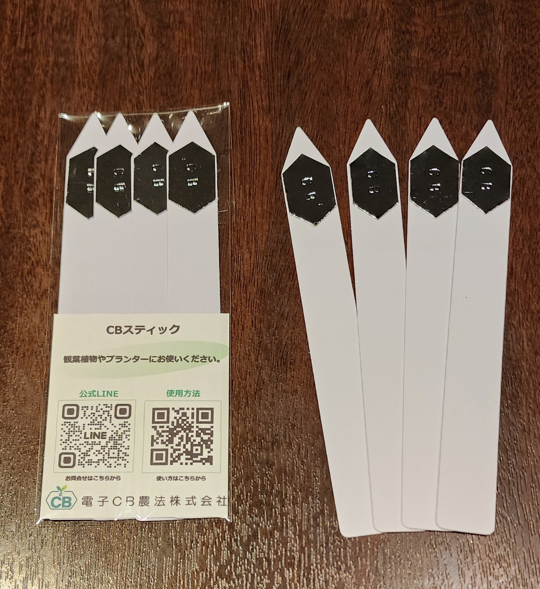
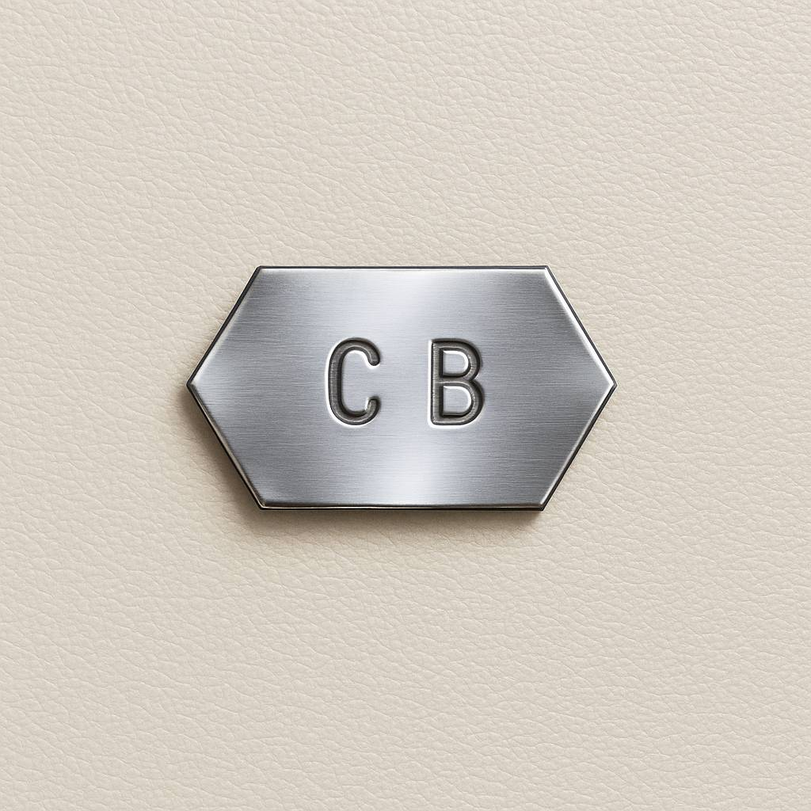

電子CB農法株式会社
電子還元作用の特許技術（特許第7444353号）
第三者機関の土壌分析レポートより
土の"免疫力"を、
科学が確かめました。
土に挿す・敷くだけの CBスティック／CBチップ。
使った土（CBあり）と使わない土（CBなし）を同じ条件で比較したところ、
2回の検証いずれでも、CBありのほうが土の「抑止力」が高い結果となりました。

CBスティック（観葉植物・プランター用）
2026年7月4日 SDB研 分析報告書 ／ 同一環境での CBあり vs なし 比較
土の抑止力（免疫力）
7.7→27.6
CBありは 約3.6倍
滅菌土の応答
CBが上
0.4158 → 0.4412
※ 試験条件について：本試験は、トマト栽培後で地力が低下した（痩せた）土壌を用いて実施したため、両区とも総合判定はD〜Eとなっています。
その厳しい条件下でも、CBあり区は抑止力が高く、判定の悪化を抑えました。良質な堆肥による土づくりとの併用で、さらなる改善が期待できます。
🌱
挿すだけ・敷くだけ
特別な設備も手間も不要。いまの栽培に足すだけで始められます。
🛡️
病気に負けにくい土へ
「抑止力」は人でいう免疫力。高いほど病気が出にくい健康な土です。
📄
数値で語れる裏づけ
勘や経験ではなく、第三者機関のレポートという客観的な根拠があります。

「抑止力」とは？ ── 土の免疫力のこと
土の中に病原菌などの"外敵"を入れ、土がそれをどれだけ抑え込めるかをセンサーで数値化したもの。数値が高いほど、病気が出にくい"健康な土"であることを意味します。